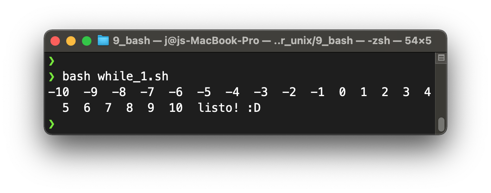
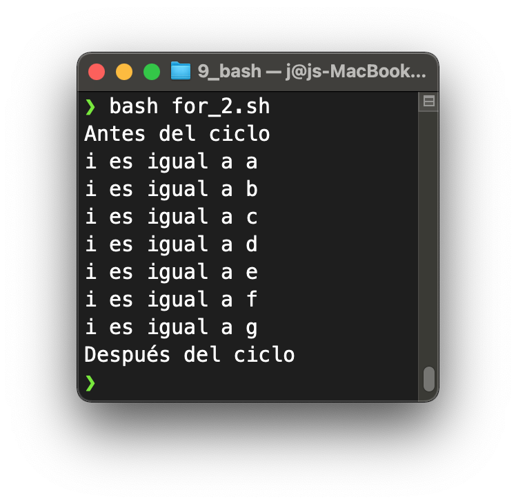

Bucles for y while
Contenido
Bucles for y while¶
Los bucles, o loops en inglés, permiten repetir líneas de código iterando sobre una secuencia o estructura de datos, como los arreglos que vimos antes, o en base a condiciones/operaciones lógicas. Iterar significa que ciertas instrucciones se ejecutan en serie un número definido de veces, hasta satisfacer una condición. Esta condición puede ser lógica.
En bash hay dos tipos de bucles: for y while. Dentro de los bucles se pueden añadir estructuras de control condicional if-else, variables, operaciones aritméticas, funciones de bash, entre otras cosas. Es importante definir bien las condiciones de parada de los bucles, de lo contrario estos ciclos nunca terminan y la computadora entra en un bucle infinito.
Primero, veremos los bucles while, que son un poco más difíciles de entender, pero al dominar while podrás entender los ciclos for muy rápido. De hecho los ciclo for son un tipo de while.
While loops 1: evadir el infinito¶
La filosofía del while loop es: ejecutar una acción siempre que una operación lógica sea verdad. Después de cada vez que se ejecute el código dentro del while, la operación lógica será evaluada, para ver si ahora ya no es verdad. Cuando deja de ser verdad, el while para. La operación lógica es la condición de continuación de ejecución del while, y puedes revisar una lista de estas operaciones en la anterior sección de este capítulo.
La sintaxis general del while loop en Bash es la siguiente:
while [[ operación lógica ]]
do
Acciones que se ejecutan de forma iterativa
done
Por ejemplo, hagamos un programa que imprima números desde el -10 hasta el 10, de 1 en 1. Para eso necesitaremos:
Una variable que permita ejecutar la operación lógica. Puede ser un contador. El contador, en este caso, es solamente una variable que almacena cuántas veces se ha ejecutado el while loop. Debe actualizarse cada vez que corra el loop, sino tendremos un loop infinito.
La operación lógica. Será necesario empezar en -10 e ir subiendo de 1 en 1 el contador hasta llegar a 10. Si el contador es mayor a 10, detendremos el while loop. Entonces para que nuestra operación sea verdad mientras avanza el loop, decimos que mientras (while) el contador sea menor o igual a 10, entonces se ejecuta el código.
La acción a ejecutar. En este caso hay que imprimir los números que incrementan en cada loop.
Abre una terminal y crea el archivo while_1.sh y escribe el siguiente script.
#!/bin/bash
# File: while_1.sh
contador=-10 # declaro contador y lo inicializo en -10
while [[ $contador -le 10 ]] # condición de continuación
do # empiezo el cuerpo del while
echo -n "$contador " # imprimo el contador
let contador=$contador+1 # actualizo el contador
done # termino el cuerpo del while
echo listo! :D # mensaje fuera del while
A continuación se muestra el A continuación se muestra el resultado que deberías obtener en la terminal: que deberías obtener en la terminal:
{kind=link}
Deber
Crea ahora un while loop que incremente de 5 en 5 el contador. ¿Qué es lo único que deberías cambiar?
Piensa qué pasaría si la operación lógica la cambiásemos por
[[ $contador -ge -10 ]]. Puedes intentar correr en tu Terminal. Si se cuelga, solo ciérrala y abre otra.¿Qué tipos de condiciones de continuación de la ejecución de while podría haber?
¿Qué hubiera pasado sin un contador?
¿Qué hubiera pasado sin no actualizabamos el contador con
let?
While loops 2: validar datos¶
Ahora intentemos otro tipo de lógica. Ingresemos datos al while loop desde teclado y validemos la entrada de datos. Es decir, le vamos a impedir a un usuario continuar si no ingresa el dato correcto. Vamos a omitir caracteres como la tilde porque pueden ser problemáticas. La idea es que el programa adivine mi idioma favorito. Permitiré que el usuario ingrese el idioma en 3 formatos diferentes. Cualquiera de ellos puede ser válido. Crea el archivo while_2.sh y copia el siguiente script:
#!/bin/bash
# File: while_2.sh
echo "Adivina mi idioma preferido."
read -p "Ingresa el idioma: " i
while [[ $i != "Aleman" ]] && [[ $i != "ALEMAN" ]] && [[ $i != "aleman" ]]
do
echo "$i no es mi idioma preferido :C"
read -p "Intenta de nuevo: " i
done
echo "Has adivinado mi idioma favorito! :D."
Nota que usamos el operador != para especificar al while que continúe mientras el usuario ingrese algo que no sea Aleman o sus variantes. No podemos usar -ne porque ese es solo para números. Además, usamos varias operaciones lógicas en el while, separadas por un ||. Esto es porque cualquiera de las formas de escribir las palabra «alemán» están correctas para el algoritmo.
Deber
Escribe el script y córrelo.
While loops 3: condicionales¶
Ahora, vamos a usar sentencias if-else dentro del while loop. Vamos a generar un juego de piedra, papel o tijeras con sentencias if-else anidadas. Vamos a jugar contra Bash, ya que generaremos números aleatorios que representen la elección de Bash sobre piedra, papel o tijera. Luego, con varios if-else, comparamos nuestra elección con la de Bash y alguien ganará la partida. El while loop permite al usuario decidir si va a jugar de nuevo.
#!/bin/bash
# File: while_3.sh
echo "*** Piedra, papel o tijeras ***"
echo "-------------------------------"
i="y"
while [[ $i == "y" ]]
do
player=0
echo "Escoge uno (escribe el número)"
echo " 1. Piedra"
echo " 2. Papel"
echo " 3. Tijeras"
read -p "> " player
consola=$((1 + RANDOM % 3))
if [[ $player == $consola ]]
then
echo "Empate ._."
elif [[ $player == 1 ]] # Piedra
then
if [[ $consola == 2 ]] # Papel
then
echo "Te ganó Bash :C"
elif [[ $consola == 3 ]] # Tijeras
then
echo "Le ganaste a Bash :D"
fi
elif [[ $player == 2 ]] # Papel
then
if [[ $consola == 1 ]] # Piedra
then
echo "Le ganaste a Bash :D"
elif [[ $consola == 3 ]] # Tijeras
then
echo "Te ganó Bash :C"
fi
elif [[ $player == 3 ]] # Tijeras
then
if [[ $consola == 1 ]] # Piedra
then
echo "Te ganó Bash :C"
elif [[ $consola == 2 ]] # Papel
then
echo "Le ganaste a Bash :D"
fi
fi
read -p "Deseas volver a jugar? (y/n): " i
done
A continuación se muestra el resultado que deberías obtener en la terminal:

Deber
Escribe el script en el archivo correspondiente y córrelo.
For loops estilo C: while loops especializados¶
Volvamos al script while_1.sh, pero reescribámoslo con la estructura de un for loop. Pero antes, la definición. Los for loops tienen la importante función de simplificar la ejecución de procesos un número definido de veces. El número puede darse por una variable que guarda un entero, como también una estructura de datos, como los arreglos. Los elementos del bucle for son:
Índice: Es una variable que toma valores mientras el bucle avanza. La idea importante es ligar el índice del for a la estructura de datos que se recorre (un arreglo, por ejemplo) o al número de iteraciones.
Estructura a iterar / límite de iteraciones: Si iteramos sobre un arreglo, por ejemplo, el for loop va a ejecutar una acción por cada elemento del arreglo. Igualmente, si ajustamos el for loop para que ejecute su contenido
nveces, entonces cambiará el índice hasta cumplir lasnveces.Acciones a ejecutar: Es lo que se hace en el for. Puede o no involucrar al índice.
La estructura general del for loop es la siguiente:
for ((índice ; regla con límite de iteraciones - operación lógica; operación con índice))
do
Acciones que se ejecutan de forma iterativa
done
La única operación lógica que se evalúa en un for loop es que el índice sea menor o igual que el número máximo de elementos a recorrer, o mínimo, si va en reversa.
El script while_1.sh en forma de bucle for entonces sería:
#!/bin/bash
# File: for_1.sh
for ((contador=-10;contador<=10;contador++)) # declaro, limito y actualizo el contador
do # empiezo el cuerpo del for
echo -n "$contador " # imprimo el contador
done # termino el cuerpo del while
echo listo! :D # mensaje fuera del while
A continuación se muestra el resultado que deberías obtener en la terminal:

Es importante reservar los for loops para cuando sabemos el número de iteraciones a realizar, mientras que usamos el while cuando no necesariamente conocemos el número de iteraciones. Entonces, las diferencias más importantes entre el while loop en while_1.sh y el for loop en for_1.sh, y entre los while y for loops en general, son las siguientes:
While Loop |
For Loop |
|---|---|
El índice |
El índice |
El índice se aumenta en una unidad dentro del cuerpo del while. |
El índice se aumenta en una unidad en la primera línea del for. |
No siempre se sabe cuándo acabará. |
Siempre se sabe el número de iteraciones. |
Deber
Escribe el script y córrelo.
For loops 2: recorrer secuencias/estructuras de datos¶
Es posible realizar acciones sobre cada elemento de una secuencia o estructura de datos (braces, arreglos, u otras). A esto le llamamos iterar o recorrer la estructura de datos. Los bucles for pueden recorrer los arreglos de maneras muy eficientes. Por ejemplo, imaginemos que tenemos un arreglo como el siguiente:

Para usar la notación de arreglo en el for, es necesario especificar i in ${arreglo[@]} después de la sentencia for. Esto quiere decir que i se convierte en cada uno de los elementos de arreglo. Esto se logra al colocar [@] alado de arreglo y al colocar todo dentro de llaves {}. Como se ve en la imagen anterior, la dirección por defecto de este bucle for es de izquierda a derecha. Este script imprimirá los elementos de arreglo de izquierda a derecha:
#!/usr/bin/env bash
# File: for_2.sh
echo "Antes del ciclo"
arreglo=(a b c d e f g)
for i in ${arreglo[@]}
do
echo "i es igual a $i"
done
echo "Después del ciclo"
A continuación se muestra el resultado que deberías obtener en la terminal:
{kind=link}
Ahora, es posible que se desee recorrer el arreglo de otra manera, por ejemplo, al revés. Es posible especificarle al for que vaya en sentido inverso, como se ilustra en esta imagen:

Prueba el siguiente código para realizar el recorrido inverso del arreglo:
#!/bin/bash
# File: for_3.sh
echo "Antes del bucle"
arreglo=(a b c d e f g)
let long=${#arreglo[@]}-1
for ((i=$long;i>=0;i--))
do
echo "El índice ($i) accede al elemento ${arreglo[i]}"
done
echo "Después del bucle"
Deber
Escribe los dos scripts en sus archivo correspondientes y córrelos.
Deber especial¶
Deber
Escoge alguno de los ejercicios de la sección sobre ejercicios de procesamiento de ficheros y arma un script llamado deber_especial.sh en ~/taller_unix/9_bash, donde recopiles varios comandos, y ejecuta estos scripts.